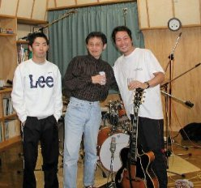
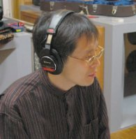
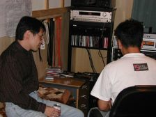
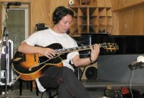
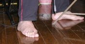
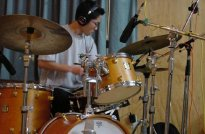
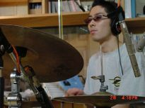

2000.11.26–29 河内スタヂオ録音
Touch!
宇多慶記宇多慶記 (org) / 宮之上貴昭 (g) / 高橋信之介 (ds)
About the Album
作品紹介
「Touchi !」 yoshiki uta
featuring yoshiaki miyanoue
＆ shinnosuke takahashi
1.Hackensack 2.Nature Boy 3.L-O-V-E 4.The Trick Bag 5.Once I Loved 6.Gospel Touch ! 7.The End Of Love Affair
8.Embraceable You 9.Road Song 10.When You Wish Upon A Star 11♪Hot-Blooded Blues （宮之上貴昭オリジナル曲 338ｋｂ）
Stereo Sound Autum 2001 No. 140 掲載記事より
10分なレンジが確保されたナチュラルで鮮度の高いサウンド
このところジャズシーンにおいてオルガンが注目されているが、そんな中、また一人注目すべきオルガン奏者が登場した。今年で43歳、初リーダー作が ’95年というから、やや遅咲きの感はあるが確かなテクニックを有し、現在都内を中心に幅広い活躍をみせている。本作はオルガン、ギター、ドラムスというオルガンジャズの正統的な編成。ストレートなジャズギターの第一人者、宮之上貴昭が共同プロデューサーとしても参加し極めて完成度の高いアルバムに仕上がっている。オルガンの響きは、なんともブルージー。そこにファンキーな宮之上のオクターヴ奏法が加わりグルーヴ感にあふれたプレイが聴ける。録音は秋田の河内スタヂオ。十分なレンジが確保されナチュラルで鮮度の高いサウンドがいきいきとした演奏を引き出している。
Recording Report
レコーディングレポート

昨日、29日、宇多慶記の新作CD無事収録する事が出来ました。ビ・バップあり、ファンキーあり、ロックっぽいのありのバラエティに富んだ作品に仕上がりました。
実はね、宇多の音に対する神経質さにえきへきするも、それがミュージシャンにとって課せられた宿命だと思えば、とっても真剣に音楽の事を再考する機会になったかも。彼の音に対する情熱を改めて認識しました。
僕はというとやっぱり、ハタチ過ぎると（ホントです）音楽の情熱も時間厳守。
時計の針が夜10時を回る頃からお酒モード。（管理人注 え～.５時でしょう？） それが僕のいつものリラックスモードと思えば皆さん納得いくでしょう。だってライブでは、始まる前から飲んでるもんね。それで僕のベスト・ソロトラック（注解 その日の最高の演奏）は日が落ちてからなんだよハハ。ハ。
かくして宇多慶記のリーダーレコーディングは無事終了しました。ホッと一息もつかのま、東京からヴォーカルの角野良子とベースの稲垣譲 が秋田に到着。明日から３日間に渡るハード合宿レコーディングの始まり、始まり。明日からの模様は後日追って報告させていただきます。応援してくださいね。
(宮之上貴昭)


出来た音をチェックする宇多氏


リズムは・・・足で・とるのぢゃ！（宮）

